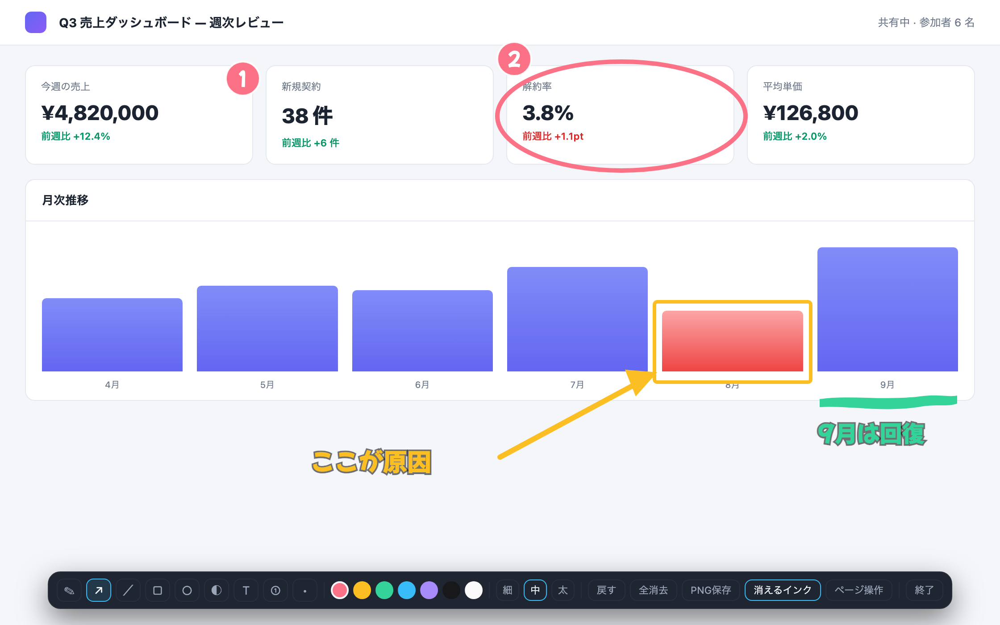

画面共有中
共有中の画面に、
共有中の画面に、
そのまま描き込む。
「ここです」を口で説明しない。Web 会議で画面を共有しながら、表示中のページに直接ペンで描けます。描いた線は数秒で消えるので、消す操作すら要りません。
無料・登録不要 / 要求する権限は 3 つだけ

How it works
アイコンを押して、描くだけ。
1
アイコンを押す
Alt+Shift+D でも起動します。押した瞬間に描けるようになります。
2
描く
ペン・矢印・矩形・楕円・テキストなど 8 ツール。キー 1 つで切り替えられます。
3
放っておく
描いた線は数秒で自動的に消えます。ページを操作したいときは H で切り替え。
ペンP
矢印A
直線L
矩形R
楕円E
スポットライトO
テキストT
ステップS
Privacy
描いた内容は、どこにも送りません。
inkover は実行時に一切の通信を行いません。描いた線はブラウザのメモリの中だけに存在し、閉じれば消えます。
activeTab
アイコンを押した、そのタブだけ。押すまでは何も見ません。
scripting
押されたときに描画キャンバスを重ねるため。
storage
選んだ色と太さを次回に引き継ぐため。ブラウザ内に留まります。
- すべてのサイトへのアクセス権（
<all_urls>）は要求しません - 閲覧履歴を読みません。開いているページの内容も取得しません
- アカウント登録は不要です
- 収集・保存する個人情報はありません